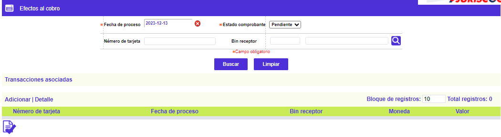
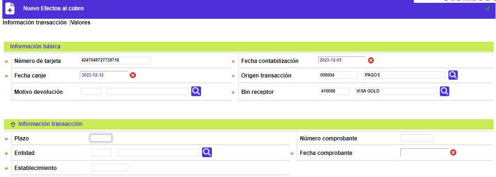
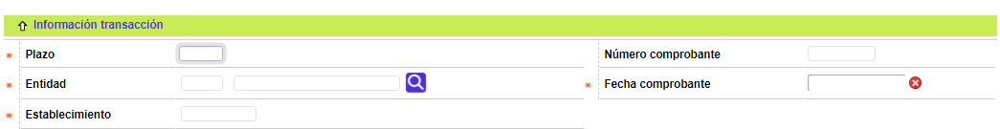
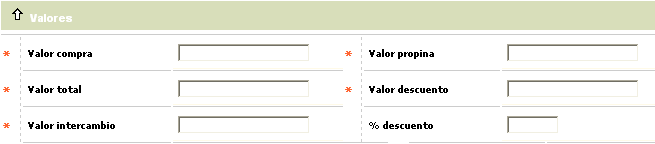
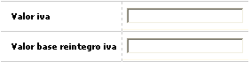
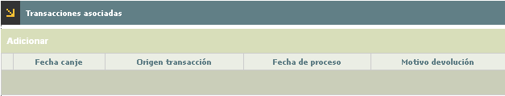
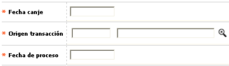

Efectos al cobro
A través de esta forma o pantalla se registran las transacciones de bines prpios, que habiendo agotado infructuosamente el proceso de intercambio, o por haber excedido notoriamente los diferentes plazos determinados por la franquicia, requieren iniciar un proceso de negociación o gestión entre las dos entidades involucradas, conocido como efectos o comprobantes al cobro, o comprobantes de buena fe.
El formulario contiene un hipervinculo Transacciones asociadas y las opciones Adicionar y Detalle. Adicionalmente, cuenta con un filtro de búsqueda y con un boton de aplicar.

Filtro: Se pueden realizar consultas a través de las siguientes opciones:

|
Fecha de proceso |
En este campo en formato YYYY-MM-DD se ingresa la fecha inicial que delimita el periodo para el cual se desea consultar el movimiento aplicado o pendiente. |
|
Estado comprobante |
Campo que muestra la condición en que se encuentra actualmente el comprobante con las condiciones de Solucionado o Pendiente. |
|
Numero de tarjeta |
Este campo permite ingresar cualquier valor alfanumérico de 23 caracteres. |
| Bin receptor |
Campo alfanumérico de ochos posiciones, en el cual se registra el bin de donde proviene el efecto al cobro. |
Adicionar: Al activar ese enlace se despliega un formulario con tres bloques de información con los siguientes campos:
Información básica:

|
Número de tarjeta |
Este campo permite ingresar cualquier valor alfanumérico de 23 caracteres. |
| Fecha contabilización |
En este campo en formato YYYY-MM-DD se ingresa la fecha con la cual se esta ingresando al sistema |
| Fecha Canje |
En este campo en formato YYYY-MM-DD se ingresa la fecha con la cual se esta ingresando al sistema |
| Origen transacción |
Despliega tanto el código como el nombre asociado a cada tipo o clase de transacción enviada a efectos al cobro contenida dentro del archivo del movimiento. La codificación es determinada por las franquicias y parametrizada mediante la opción Orígenes de transacciones. |
| Motivo devolucion |
Contiene el código de la causa o motivo por la que la transacción fue devuelta por la entidad emisora del plástico asociado a la misma. |
| Bin receptor |
Despliega el mismo prefijo o bin fuente. |
Información transacción :

|
Plazo |
Contiene el número de periodos solicitado por el cliente o asignado por defecto, para el pago de la transacción de consumo o utilización |
| Nùmero comprobante |
Contiene el número del comprobante correspondiente a la transacción en proceso de efecto al cobro. |
| Entidad |
Despliega tanto el código de compensación como el nombre de la entidad financiera en la que posee la cuenta de depósitos el establecimiento en que se realizó la utilización o consumo |
| Fecha comprobante |
Contiene la fecha en formato DD-MM-YYYY en la cual se realizó la transacción en disputa. |
| Establecimientos |
Despliega tanto el código único como el nombre del establecimiento en que se realizó la utilización o consumo. |
| Fecha consignación |
Campo en formato DD-MM-YYYY que contiene la fecha en que el establecimiento efectuó la consignación del comprobante en disputa. |
| Marca |
Campo que posee lista de valores poblada a través de la opción Franquicias, con las marcas autorizadas para operar, actualmente sólo aplica de manera exclusiva para Visa, dado que es la única que genera intercambio de información para este tipo de trámite de transacciones. |
| Estado de comprobante |
Campo de salida con el valor Pendiente, que el estado que queda cuando se graba el comprobante. |
| Sucursal |
Campo que posee lista de valores que despliega los códigos de las oficinas de la entidad. |
| Tipo documento |
Señala la clase de documento presentado para iniciar las gestiones requeridas en efectos al cobro y que puede ser Carta, Fotocopia, Automático u Original. |
| Moneda |
Campo de salida y muestra la moneda con la que actualmente esta trabanjando la entidad, |
| Bin fuente |
Despliega los bines de la entidad |
| Tipo de captura |
Este campo es de salida y es 1 que significa que la transaccion fue capturada manualmente. |
| Bin destino |
Señala el prefijo o bin de la entidad adquirente de la transacción. |
| Número de cuenta |
Reseña el número de cuenta de depósitos correspondiente al establecimiento de comercio involucrado en el comprobante de efecto al cobro. |
| Tipo de comprobante |
Señala si el comprobante es Enviado o Recibido, lo que permite conocer el rol desempañado por la entidad respecto de cada comprobante; de igual manera y a manera de criterio de búsqueda, permite realizar consultas |
| Autorización |
Muestra el número de la autorización asignado a la transacción por el procesador o la entidad |
| Tipo de solución |
Despliega una de las varias posibilidades que se tiene para dar "solución" a un comprobante de efectos al cobro, acorde con la evolución que el mismo haya tenido dentro del proceso de negociación. |
| Boleta ruta |
Corresponde al número consecutivo de los comprobantes de control permitidos por cada oficina en la captura del movimiento, producto de la operación diaria. Los rangos de estos consecutivos son determinados previamente en la opción Boletas de Ruta del presente módulo. |
Valores :

|
Valor compra |
Muestra el monto de la transacción de utilización o consumo sin incluir el monto de la propina concedida por el tarjetahabiente ni el valor del IVA. |
| Valor propina |
Refleja el monto de la propina otorgada por el cliente. |
| Valor total |
Despliega el valor bruto de la transacción, esto es, valor del consumo o utilización más valor propina, más valor IVA. |
| Valor descuento |
Contiene el valor deducido al establecimiento al liquidarle la comisión para la entidad, sobre el valor del consumo realizado por el cliente. |
| Valor intercambio |
Correspode al valor neto de la transacción, esto es, valor del consumo o utilización más valor propina, más valor IVA menos valor descuento. |
| % descuento |
Corresponde al valor del porcentaje que le es aplicado a las compras o consumos realizados en ese establecimiento a manera de comisión o descuento. |
Adicionalmente el formulario con un globo de localización con los siguiente campos:

|
Valor iva |
Correspode al valor del iva pagado por el cliente. |
| Valor base reintegro iva | Correspode al valor de la base con la cual se calculo el iva. |
Transacciones asociadas : Mediante este formulario se parametriza que opción va a tomar el efecto al cobro. Enviar el comprobante a intercambio o abonar al establecimiento.
El formulario contiene la opción Adicionar.

Adicionar: Al activar ese enlace se despliega un formulario con los siguientes campos:

|
Fecha canje |
En este campo en formato YYYY-MM-DD se ingresa la fecha con la cual se esta ingresando al sistema |
| Origen transacción |
En este campo solo se pueden seleccionar dos transacciones que son 000043 (nota credito establecimiento) y 000044 (nota credito intercambio) |
| Fceha de proceso |
En este campo en formato YYYY-MM-DD se ingresa la fecha con la cual se esta ingresando al sistema |
Aplicar: El formulario debe contar con un boton de aplicar, que dependiendo de la transaccion que se le asocia hace el siguiente procedimiento:

Cuando la transaccion asociada es 000043 (nota credito establecimiento) el sistema genera el cargo a la tarjeta y el abono correspondiente al establecimiento.
Cuando la transaccion asociada es 000044 (nota credito intercambio) el sistema genera el cargo a la tarjeta y genera una transaccion para ser enviado en canje al banco adquirente de la transaccion.
Detalle: Si el usuario invoca la opción Detalle se despliega el siguiente formulario:

Dentro del detalle se encuentra el globo de localización el cual despliega el siguiente formulario